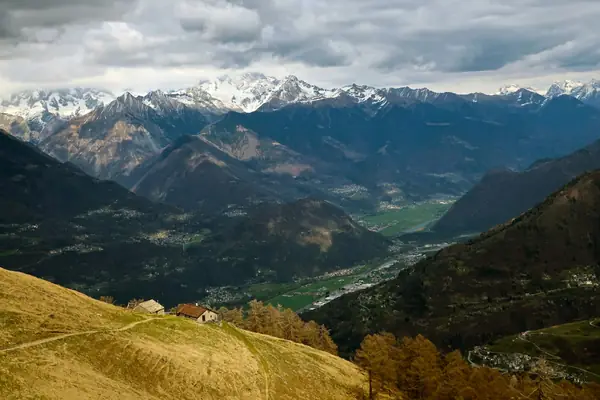

Home › Wine regions › Lombardy
Lombardy wine region

Photo: Marco Forno on Unsplash
Franciacorta sparkling and Alpine Valtellina reds.
Vines grow in all 20 regions. Wines are classed DOCG, DOC and IGT.
Notable producers in Lombardy
- Ca' del Bosco
- Bellavista
- Nino Negri
- ArPePe
- Berlucchi
Official appellations
| Appellation | Status | Style | Grapes |
|---|---|---|---|
| Franciacorta (1995) Traditional-method sparkling wine from the hills south of Lake Iseo. Non-vintage needs at least 18 months on the lees, Millesimato 30; Satèn is a blanc de blancs made at lower pressure. | DOCG | Sparkling | Chardonnay, Pinot Noir, Pinot Blanc |
| Oltrepò Pavese Metodo Classico (2007) Pinot Noir-led traditional-method sparkling from the Oltrepò hills south of Pavia. | DOCG | Sparkling | Pinot Noir, Chardonnay |
| Moscato di Scanzo (2009) Italy's smallest DOCG: a rare sweet red passito from Moscato di Scanzo near Bergamo. | DOCG | Sweet | Moscato di Scanzo |
| Sforzato di Valtellina (2003) Also called Sfursat, this is Valtellina's dry red from Nebbiolo (Chiavennasca) grapes dried in airy lofts for about three months before pressing, usually not before December. Rules require at least 90% Nebbiolo, 14% alcohol and 20 months' ageing including 12 in wood. Good to know: the drying adds body and dried-cherry richness while the Alpine acidity keeps it fresher than most Amarone. | DOCG | Red | Nebbiolo |
| Valtellina Superiore (1998) In the Alps of northern Lombardy, Nebbiolo (here called Chiavennasca) grows on south-facing, dry-stone terraces of thin granite and schist above the Adda. At least 90% Nebbiolo, aged 24 months (12 in wood) and Riserva 36 months; the sub-zones Maroggia, Sassella, Grumello, Inferno and Valgella can appear on labels. Good to know: wine bottled across the border in Switzerland is labelled 'Stagafassli'. | DOCG | Red | Nebbiolo |
| Bonarda dell'Oltrepò Pavese Fizzy or still, juicy red from Croatina, locally called Bonarda. | DOC | Red | Croatina |
| Botticino Red blend from the hills east of Brescia. | DOC | Red | Barbera, Marzemino, Sangiovese |
| Buttafuoco dell'Oltrepò Pavese Robust, sometimes fizzy red blend from a small Oltrepò zone. | DOC | Red | Barbera, Croatina |
| Capriano del Colle Small DOC south of Brescia. | DOC | White, Red | Trebbiano, Marzemino, Sangiovese |
| Casteggio Barbera-based red from Casteggio in the Oltrepò. | DOC | Red | Barbera |
| Cellatica Red blend from near Brescia. | DOC | Red | Marzemino, Barbera |
| Curtefranca Still wines from the Franciacorta zone. | DOC | White, Red | Chardonnay, Cabernet Franc, Merlot |
| Garda Varietal wines from around Lake Garda in Lombardy and Veneto. | DOC | White, Red | Garganega, Chardonnay, Merlot |
| Garda Colli Mantovani Hills south of Lake Garda near Mantua. | DOC | White, Red | Garganega, Merlot |
| Lambrusco Mantovano Lombardy's Lambrusco, from the plains around Mantua. | DOC | Red | Lambrusco |
| Lugana (1967) Textured whites from Turbiana (Trebbiano di Lugana) on clay south of Lake Garda, shared with Veneto. | DOC | White | Turbiana |
| Oltrepò Pavese Large DOC in the hills south of the Po near Pavia. | DOC | White, Red | Barbera, Croatina, Pinot Noir, Riesling |
| Oltrepò Pavese Pinot Grigio Pinot Grigio from the Oltrepò Pavese. | DOC | White | Pinot Grigio |
| Pinot Nero dell'Oltrepò Pavese Still Pinot Noir from Italy's largest Pinot Nero area. | DOC | Red | Pinot Noir |
| Riviera del Garda Classico The home of Chiaretto rosé and Groppello reds on Garda's western shore. | DOC | Rosé, Red | Groppello, Marzemino, Barbera |
| Rosso di Valtellina Fresh, younger-drinking Valtellina Nebbiolo. | DOC | Red | Nebbiolo |
| San Colombano al Lambro The only DOC in the province of Milan. | DOC | Red | Croatina, Barbera |
| Sangue di Giuda dell'Oltrepò Pavese Sweet, fizzy red whose name means 'blood of Judas'. | DOC | Sweet | Croatina, Barbera |
| San Martino della Battaglia Tiny DOC for Tocai Friulano south of Lake Garda. | DOC | White | Friulano |
| Terre del Colleoni Varietal wines from the Bergamo hills. | DOC | White, Red | Merlot, Chardonnay |
| Valcalepio Bergamo-area Bordeaux blends and whites. | DOC | White, Red | Merlot, Cabernet Sauvignon, Pinot Bianco |
Lombardy wines to try
Ca' del Bosco Franciacorta Cuvée Prestige
Lombardy · Franciacorta · Franciacorta
Fine bubbles, white peach, citrus and toasty bread notes.
Food: Aperitivo, sushi, fried risotto balls
Nino Negri Sfursat 5 Stelle
Lombardy · Sforzato di Valtellina · Nebbiolo
Made from dried mountain Nebbiolo: cherry, dried fig, rose and spice, rich yet fresh.
Food: Braised beef, pizzoccheri, aged cheese
More wine regions in Italy
The Wine Reference newsletter
New wines, stories and career guides, one email a week at most.
Over 18s only. Unsubscribe any time with one click. Your email is stored securely by Kit and never shared.
Support The Wine Reference
This guide is free, with no paywall. If it helped you choose a bottle, you can buy me a glass and keep it growing.
🍷 Buy me a glass